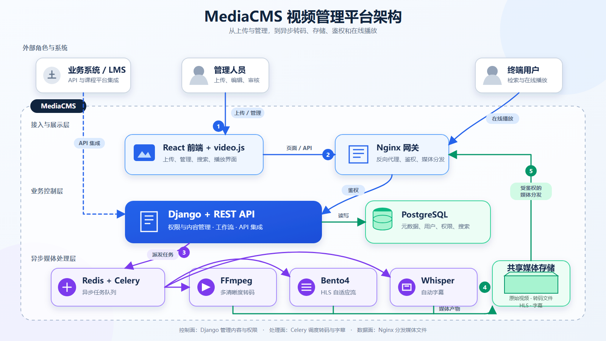

资产管理
视频、音频、图片与 PDF 统一入库，带分类、标签、搜索、播放列表和元数据。
上游事实01 / 能力与代价
“重”来自完整性：每多接管一环，团队就少依赖一个外部平台，同时也多承担一份基础设施与运维责任。
视频、音频、图片与 PDF 统一入库，带分类、标签、搜索、播放列表和元数据。
上游事实异步转码、缩略图、HLS、自适应播放与可选 Whisper 字幕形成处理流水线。
上游事实公开、私有、非公开链接、直接授权、分类组权限，以及 SAML、LTI 1.3 等集成。
上游事实Nginx、Django/Gunicorn、PostgreSQL、Redis、Celery worker/beat 与媒体工具需要共同运行。
README 建议为原件、编码版本与 HLS 预留约三倍空间。扩容时，Web 与 worker 还需访问同一份媒体文件，因此共享文件系统会成为关键依赖。
02 / 底层原理
下面三条链路共用同一套节点。切换任务，可看到请求如何穿过前端、应用、队列、媒体工具与存储。

03 / 使用场景
它最适合需要拥有数据、权限与处理链路的组织；当需求只停留在播放组件或轻量托管时，完整平台反而会拖慢团队。
04 / 采用评估
选择当前真实条件，得到方向性建议。它不是采购评分，也不替代容量压测、安全评估或许可证法律意见。
我们会同时计算平台收益与引入成本，并对直播、DRM、轻量需求等硬边界优先提示。
05 / 可扩展方向
最有价值的工作不是换皮，而是把当前本地共享文件系统与固定转码工具链抽象成可替换基础设施，再向上建设 AI 和治理。
抽象本地路径依赖，支持直传、生命周期、分发与跨区容灾。
扩展 GPU、外部转码服务、幂等重试、队列可观测与自动伸缩。
说话人、章节、摘要、OCR、内容审核、向量检索与视频问答。
OIDC/SCIM、审计、保留策略、水印、DRM 与真正的租户隔离。
当前多处媒体处理直接使用文件的本地 .path、系统命令与文件存在性检查，因此接入 S3 / MinIO 不是“改一项配置”，而是一项存储抽象工程。
06 / 证据与边界
研究固定在 v8.4.0 / d146be7c3c6828075dfc83719c37819f1b6fbef7，避免文档与代码漂移。
已完成源码检查、研究页构建和浏览器验收；没有部署或压力测试 MediaCMS 本体。
项目采用 AGPL-3.0。网络服务修改版可能涉及对应源码提供义务，正式商用前需结合部署与修改方式做法律评估。
安全策略仅支持最新稳定版，生产采用意味着持续升级，而不是一次部署后长期冻结。